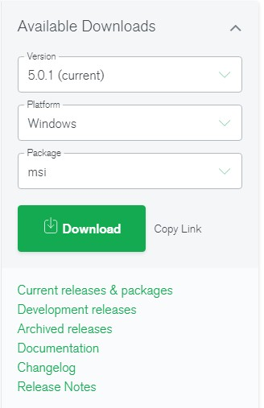

Для установки MongoDB на Windows проходим по ссылке
После того как скачали файл установщика просто его инсталируем без каких-либо особенностей. Далее на диске С дано создать папку "data", а вней папку "db"
После этого в консоле надо будет выполнить вот такую комманду (Эта команда запускает MongoDB database)
"C:\Program Files\MongoDB\Server\5.0\bin\mongod.exe" --dbpath="c:\data\db"Следующий шаг нам нужно подключиться к нашей БД. Так же в терминале вводим команду: (терминал открываем новый)
"C:\Program Files\MongoDB\Server\5.0\bin\mongo.exe"